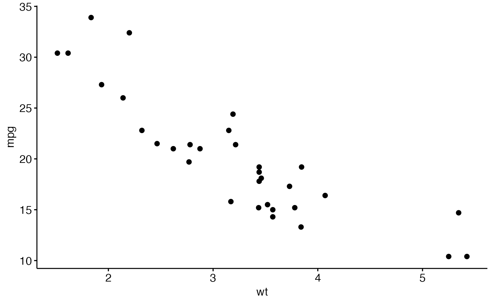
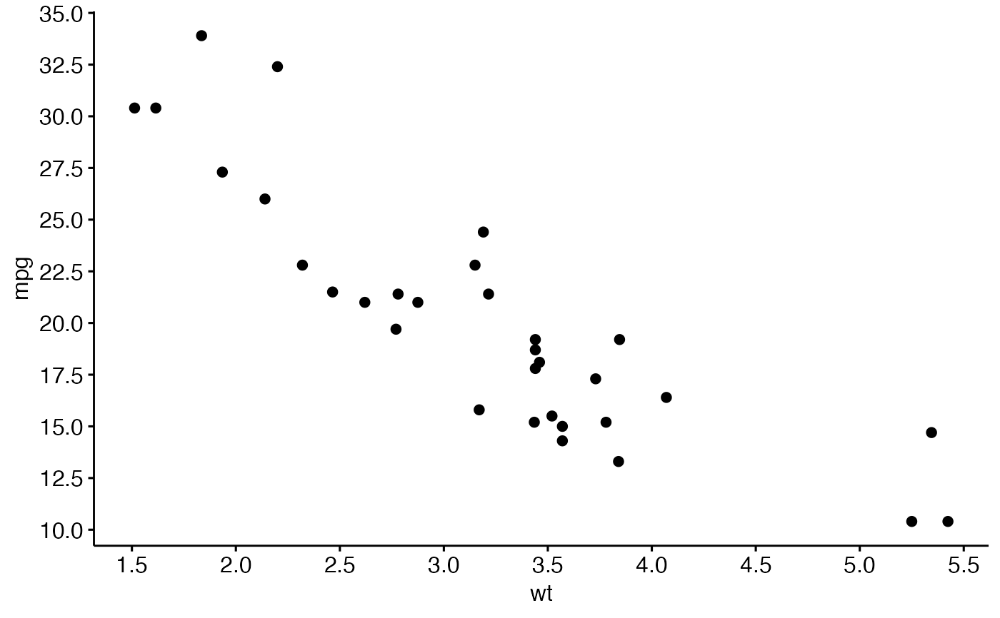
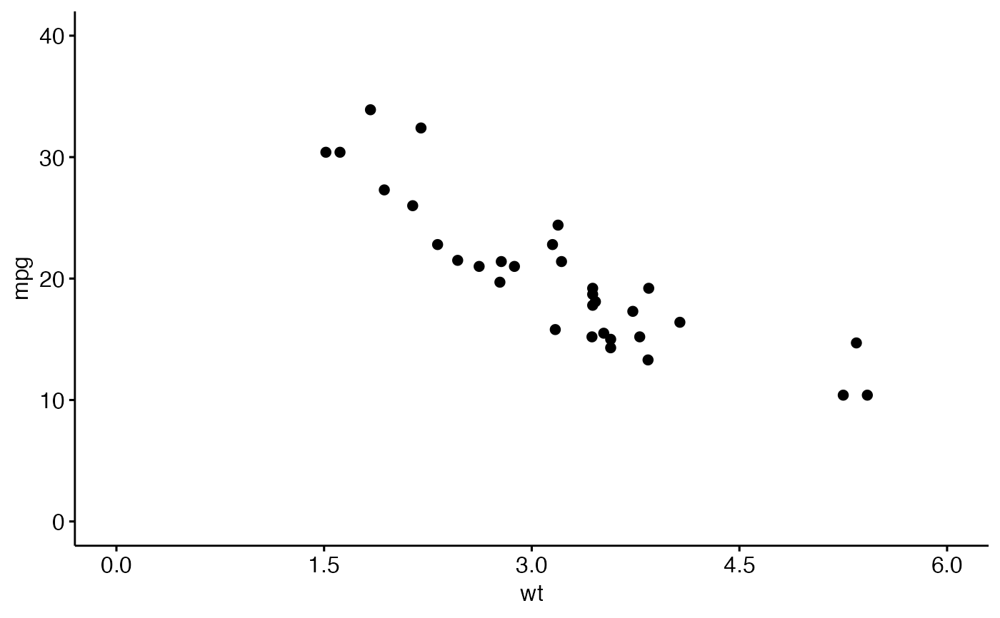

Creates breaks for numeric axes to be used in the functions
scale_x_continuous() and
scale_y_continuous(). Can be used to increase the
number of x and y ticks by specifying the option n. It's also
possible to control axis breaks by specifying a step between ticks. For
example, if by = 5, a tick mark is shown on every 5.
Examples
# Generate 5 breaks for a variable x
get_breaks(n = 5)(x = 1:100)
#> [1] 0 25 50 75 100
# Generate breaks using an increasing step
get_breaks(by = 10)(x = 1:100)
#> [1] 0 10 20 30 40 50 60 70 80 90 100
# Combine with ggplot scale_xx functions
library(ggplot2)
# Create a basic plot
p <- ggscatter(mtcars, x = "wt", y = "mpg")
p

# Increase the number of ticks
p +
scale_x_continuous(breaks = get_breaks(n = 10)) +
scale_y_continuous(breaks = get_breaks(n = 10))

# Set ticks according to a specific step, starting from 0
p + scale_x_continuous(
breaks = get_breaks(by = 1.5, from = 0),
limits = c(0, 6)
) +
scale_y_continuous(
breaks = get_breaks(by = 10, from = 0),
limits = c(0, 40)
)
